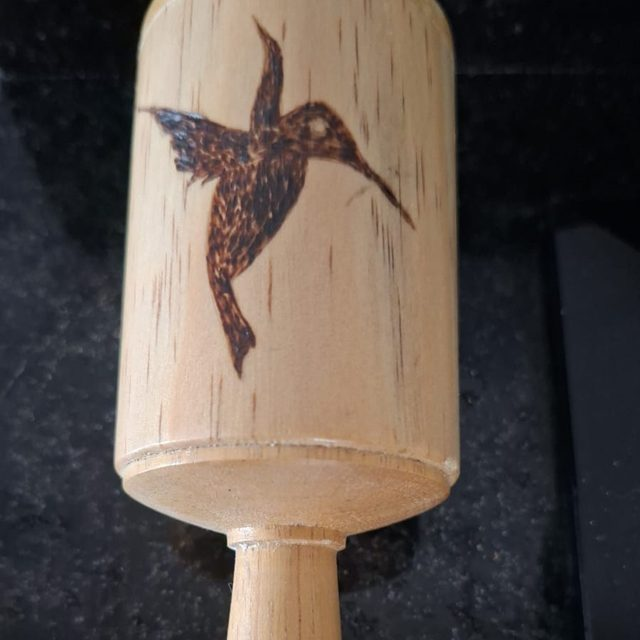
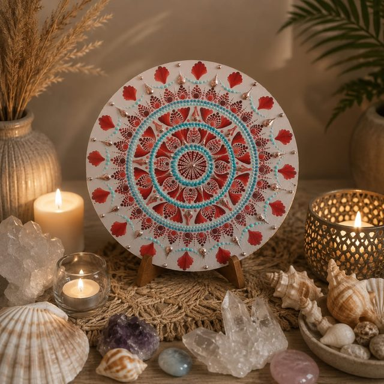
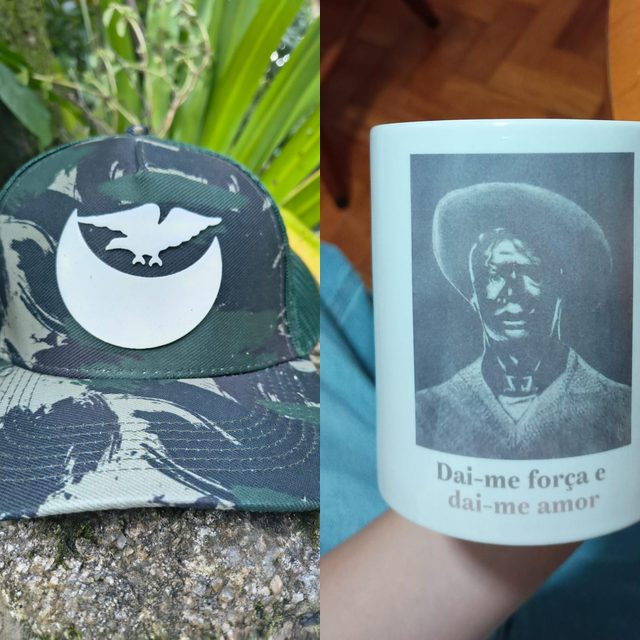

✦
✧
✦
NATAL SOLIDÁRIO
Sorteio Natalino
Luiz Manni Amig@s da Rua
200 números
4 prêmios
1 Natal mais feliz
R$ 10
cada número
Concorra a 4 prêmios

1º prêmio
Maracá

2º prêmio
Mandala + caixa de joias

3º prêmio
Boné + caneca Amigos da Rua
4º prêmio
Copaíba, andiroba, vela aromática + plant hanger de macramê